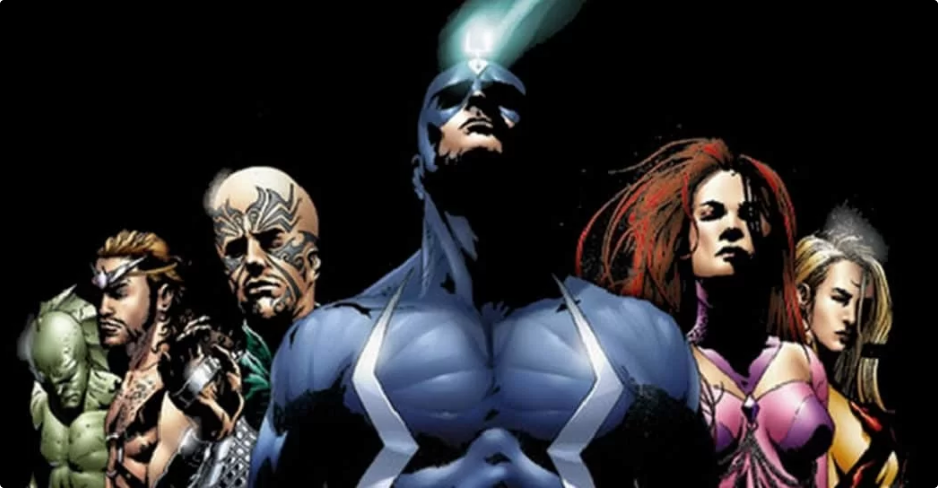

VINGADORES
Os Vingadores (The Avengers no original em inglês) são um grupo de super-heróis de história em quadrinhos publicados nos Estados Unidos pela editora Marvel Comics. O grupo também aparece em adaptações da Marvel para cinema, desenho animado e jogos eletrônicos. Nick Fury foi o autor da iniciativa “Vingadores”. O diretor da S.H.I.E.L.D. teve a ideia de reunir os super-heróis mais poderosos da Terra para serem a primeira linha de defesa do planeta contra as ameaças mais poderosas do universo. Os heróis mais conhecidos são a formação: Homem de Ferro/Tony Stark, o Incrível Hulk/Bruce Banner, Capitão América/Steve Rogers, Thor, Viúva Negra/Natasha Romanoff e Gavião Arqueiro /Clint Barton, formação essa que se popularizou no cinema. Após os eventos que ocorrem em títulos subsequentes, a equipe expandiu e personagens como Falcão/Sam Wilson, Feiticeira Escarlate/Wanda Maximoff, Visão, Homem-Formiga/Scott Lang, Bucky Barnes/Soldado Invernal, o Príncipe T'Challa de Wakanda/Pantera Negra, Homem-Aranha/Peter Parker, Doutor Estranho, Star Lord, dentre outros. Juntaram-se a equipe.
X-MEN
X-Men é uma equipe de super-heróis da Marvel Comics. Era formada inicialmente pelo Professor X, Ciclope, Fera, Homem de Gelo, Anjo e Garota Marvel, atual Jean Grey. Os X-Men são mutantes: humanos que, como resultado de um súbito salto evolucionário, nasceram com habilidades super-humanas latentes, que geralmente se manifestam na puberdade. Vários homens comuns têm um intenso medo e/ou desconfiança dos mutantes, que são vistos pelos cientistas em geral como o novo degrau da evolução humana. Logo, muitos os consideram uma ameaça à própria sociedade humana, fato intensificado por mutantes que usam seus poderes para fins criminosos. Para combater estes "mutantes malignos" e promover a coexistência pacífica entre as duas raças, o benevolente Professor Charles Xavier (ou Professor X, o milionário que é, secretamente, um dos maiores telepatas da Terra), fundou uma academia para treinar jovens mutantes e doutriná-los em seu sonho de "harmonia inter-racial". Ocultando sua real intenção do restante do mundo sob a fachada do Instituto Xavier Para Jovens Super-Dotados, Charles deu início ao seu sonho.
QUARTETO FANTÁSTICO

O Quarteto Fantástico é uma equipe de super-heróis de histórias em quadrinhos publicados pela Marvel Comics. O grupo estreou em The Fantastic Four #1 (data de novembro 1961), que ajudou a inaugurar um novo nível de realismo no meio. O Quarteto Fantástico foi o primeiro time de super-herói criado pelo escritor-editor Stan Lee e o ilustrador Jack Kirby, que desenvolveram uma abordagem colaborativa para a criação de quadrinhos com este título que usariam a partir de então. Como a maioria dos personagens criados pela Marvel durante a década de 1960, o Quarteto Fantástico deve os seus poderes à exposição a radiação, neste caso mais especificamente à radiação cósmica, com a qual teriam entrado em contacto durante uma viagem de exploração espacial. Embora a formação do grupo mude ocasionalmente, a equipe mantêm-se estável em volta dos quatro amigos que ganharam superpoderes ao serem atingidos pelos raios cósmicos. A equipe iniciou-se com a renovação da Marvel que ocorreu na década de 1960 sob o comando de Stan Lee. Permaneceram mais ou menos populares desde então e foram adaptados para outros meios, incluindo três séries relativamente bem-sucedidas de desenhos animados e, até ao momento, três filmes lançados respectivamente em 2005, 2007 e 2015. Em 2015, a revista entrou em hiato devido à problemas jurídicos com a 20th Century Fox, cujos executivos pleitavam que o estúdio detinha os direitos autorais sobre os personagens. Em 2018, foi revelado o retorno da revista para Agosto desse mesmo ano, a contagem reiniciaria e Dan Slott estaria no roteiro da série.
GUARDIÕES DA GALÁXIA

Guardiões da Galáxia (no original Guardians of the Galaxy) é um nome compartilhado por duas equipes publicadas nas histórias em quadrinhos americanas pela editora Marvel Comics. Ambas as versões atuam principalmente dentro do espaço sideral na proteção de planetas e galáxias contra ataques e guerras alienígenas. Os Guardiões originais apareceram pela primeira vez na revista "Marvel Super-Heroes" #18 (Janeiro de 1969) com o objetivo de deter a invasão dos Badoon a Terra.[1][2] Já a segunda e atual formação dos Guardiões apareceram na revista "Guardiões da Galáxia" (Vol. 2) #1 (Maio de 2008)[3] quando o Senhor das Estrelas decidiu unir alguns heróis na intenção de deter a invasão de Phalanx ao planeta Hala, terra natal dos Kree.
THUNDERBOLTS
Os Thunderbolts são um grupo de super-heróis fictícios da Marvel Comics, formado originalmente pelos super-vilões conhecidos como Mestres do Terror, ao resolverem se passar por um grupo de super-heróis quando Os Vingadores e outros heróis desapareceram, após a saga Massacre. Sua formação inicial era composta por Atlas, Cidadão V, MACH-I, Meteorita, Soprano e Tecno. Sua atual formação tem o intuito de ajudar porém ainda com métodos não muito "heroicos".O grupo que foi reunido pelo Hulk Vermelho é formado por: Deadpool, Justiceiro, Elektra, Motoqueiro Fantasma, Venom e Octopus.
INUMANOS
Inumano ou Inumanos no plural (no original Inhumans) são seres de uma espécie humanoide fictícia das histórias em quadrinhos criada por Stan Lee e Jack Kirby para a Marvel Comics. Os Inumanos são descendentes de humanos normais, que há muitos séculos foram modificados em experiências realizadas pelos alienígenas conhecidos como Kree. Os Inumanos apareceram pela primeira vez na revista Fantastic Four #45 em Dezembro de 1965, como coadjuvantes do Quarteto Fantástico. Antes dessa aventura, alguns membros já haviam aparecido individualmente, como vilões: Medusa (#36) e Gorgon (#44). Os Inumanos principais são os pertencentes à Família Real, que governam os demais, num rígido sistema de castas. O lar dos Inumanos era uma cidade no Himalaia, chamada Attilan, nome que já fora mencionado por Jack Kirby na história "Tuk the Caveboy", publicada em Captain America #1 (1941). A cidade foi descrita como o lar de uma raça que evoluiu quando os seres humanos ainda estavam na Idade da Pedra.[1][2][3] Nos anos 70 eles se mudaram para a Zona Azul na Lua, para fugir dos efeitos da poluição da atmosfera terrestre.
VINGADORES SOMBRIOS

Os Vingadores Sombrios é uma equipe que buscam justiça no mundo, e é considerado a subequipe oficial dos Vingadores Após a Invasão Secreta da raça alienigena conhecida como Skrulls, a organização mundial mantedora da paz, S.H.I.E.L.D. foi desmantelada e substituída por uma nova organização, a M.A.R.T.E.L.O. comandada por Norman Osborn. Aproveitando-se disso, Norman criou uma nova Iniciativa e sua própria equipe de Vingadores. Isso acabou provocando uma divisão do grupo, passando a ter 3 equipes de Vingadores agindo. Os Vingadores de Norman Osborn (Vingadores Sombrios), classificados como Vingadores ofíciais, pois eles trabalhavam para a M.A.R.T.E.L.O. Esta equipe era formada por: Venom (Mac Gargan), Wolverine (Daken), Capitã Marvel (Carla Sofen), Gavião Arqueiro (Mercenário), Capitão Marvel (Noh-Varr), Sentinela e Ares, sendo liderados pelo Patriota de Ferro (Norman Osborn).
ETERNOS
ETERNOS, um grupo de heróis de alienígenas que protegem a Terra desde o início da humanidade. Quando criaturas monstruosas chamadas de Deviantes, que pensavam há muito ter sumido da história, retornam misteriosamente, os Eternos são forçados a se reunir para defender, novamente, a humanidade.